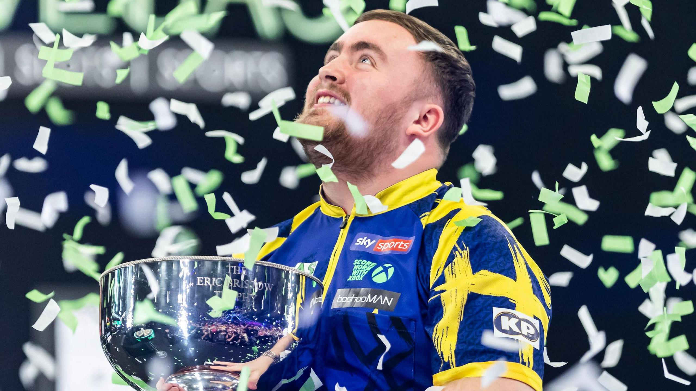

Az egyetlen major torna, amely csoportkörrel indul. A PDC bajnokai mellett más darts-szervezetek legjobbjai és a női topjátékosok is meghívást kapnak rá.
Az év tizedik nagy tornája.
A 2026-os Grand Slam of Darts tornát 2026. november 14. és 22. között rendezik meg a wolverhamptoni WV Active Aldersley sportközpontban. Luke Littler kétszeres címvédőként érkezik a versenyre (miután 2024-ben és 2025-ben is megnyerte azt), és a tornán eddigi pályafutása során egyszer verték meg (Niels Zonneveld).
November közepe
Wolverhampton - WV Active Aldresley (Anglia)